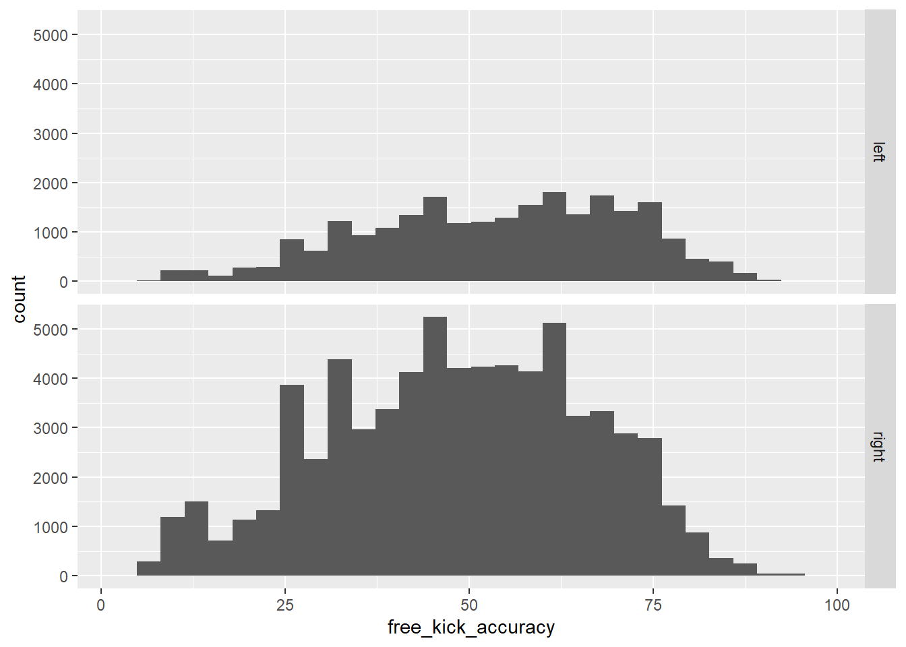

Player_Attributes <- read_csv("https://raw.githubusercontent.com/nick3703/WP_SCORE/main/soccer/Footedness/Player_Attributes.csv")Does Footedness Impact Free-Kick Accuracy?
T-test
Exploratory Analysis
Does Footedness Impact Free-Kick Accuracy?
Solutions to this module are available here
Here is the data associated with this module
1. Learning Goals
A student who successfully completed this module should have the ability to: \(\\\)
Apply the six steps of the statistical investigation method to comparing two groups on a quantitative response.
Calculate the five-number summary (quartiles) and create histograms and box plots to explore the data from two groups with a quantitative response variable.
Develop a null and alternative hypothesis for a research question for comparing two means.
Assess the statistical significance of the observed difference between two groups.
Apply the 3S Strategy to assess whether two sample means differ enough to conclude that there is a genuine difference in the population means or long-run means of a process.
Use the 2SD method to estimate a confidence interval for the difference in two means.
Determine the strength of evidence using the theory-based approach (two-sample t-test) for comparing two means.
2. Introduction
Soccer, also known as football in other countries, is one of the most popular sports in Europe. In soccer, a player can either be right foot dominant or left foot dominant, and this can lead to differences in how players play. Left footed players are rare in professional soccer, and as such, other players may not be able to play against them as effectively. For example, left-footed shots and passes may be harder to block or intercept. As a result, left-footed players are often very sought after by teams. But does this belief have any statistical basis?
There are many ways to investigate this question, but the way this module compares the two groups is through a comparison of their free-kick accuracies. This measure was chosen because it was the variable that was most likely to be unaffected by other outside variables such as the player’s skill, speed, or other attributes, making it a relatively clear measurement of both kicking ability and the opposing team’s ability to block the free kick.
In order to answer this question, we will use data collected from soccer games all over Europe to determine each player’s preferred foot, group the players by their preferred foot, and calculate the mean free-kick accuracy score for each group. A quick side note regarding the free-kick accuracy score, this is not the percentage of free kicks made by the player, but a score from 0-99 assigned to a player based on their current performance in free-kicks.
Knowing the calculated difference, we can use statistical analysis to determine if the difference in free-kick accuracy score between right-footed and left-footed players is more likely due to a difference between the two groups or just due to chance. In statistics, such an analysis is known as a two-sample t-test for a difference in means. This module will guide you through exploring the data, developing hypotheses, and determining the strength of evidence provided by the data.
3. Data
The data for this project comes from the Kaggle Database titled “European Soccer Database: 25k+ matches, players & teams attributes for European Professional Football” uploaded by Hugo Mathien. The data for this dataset comes from multiple sources, including http://football-data.mx-api.enetscores.com/ (includes scores, lineup, team formation and events), http://www.football-data.co.uk/ (betting odds), and http://sofifa.com/ (player and team attributes).
The data includes a total of seven tables: Country, League, Match, Player, Player_Attributes, Team, and Team_Attributes, and these seven tables have a total of 199 columns. According to the description, the database contains data from 2008 to 2016 on more than 25,000 matches, 10,000 players and their attributes, 11 European countries and their lead championships, team line ups, betting odds, and detailed match events (goal types, possession, corner, cross, fouls, cards, etc.)
The code for loading the SQLite database and selecting the data of interest will be included in the appendix. This code loads the seven tables from the SQLite database into a separate data frame for each table. Once we have the data frames, we can narrow it down to the data that we actually need in order to conduct the analysis. Through looking at the data in each table, we can determine that the only table that applies to the question we are trying to answer is the Player_Attributes table. The code in the appendix writes the data in this table to a csv file, which is read using the code shown below.
Now that we know what table we want to focus on, we can take a closer look and select possible variables of interest. In addition, we can create some summary statistics and display them in a well-organized table. The code below shows how to filter out missing data, select certain columns of interest, and show summary statistics.
#Data frame with attributes
select_player_attributes <- Player_Attributes %>%
drop_na() %>%
select(preferred_foot, ball_control, free_kick_accuracy, overall_rating)
#Table to show summary of data frame
select_player_attributes %>%
group_by(preferred_foot) %>%
summarize(mean_BC = mean(ball_control),
mean_FCA = mean(free_kick_accuracy),
mean_OR = mean(overall_rating),
n = n()) %>%
kable(col.names = c("Preferred Foot", "Mean Ball Control Score",
"Mean Free Kick Accuracy", "Mean Rating", "Number of Observations"))| Preferred Foot | Mean Ball Control Score | Mean Free Kick Accuracy | Mean Rating | Number of Observations |
|---|---|---|---|---|
| left | 65.65477 | 53.52865 | 68.82293 | 23923 |
| right | 63.03961 | 48.27246 | 68.63414 | 69702 |
As shown by the summary statistics, there do seem to be score differences between left-footed and right-footed players, with the Mean Free Kick Accuracy showing the greatest difference. This indicates to us that we are on the right track and should continue with our statistical analysis.
4. Methods/Instructional Content
In order to draw inferences from the data, we will conduct a theory-based test to compare two means, also known as a two-sample t-test. A two-sample t-test calculates the standardized t-statistic, similar to the standardized z-statistic. However, while the z-statistic is used to compare differences in proportions, the t-statistic is used to compare differences in sample means. Therefore, a standardized t-statistic is suitable for this situation. T-statistic can be calculated by:
\[T = \frac{\text{mean}_1 - {\text{mean}_2}}{SE(\text{statistic})}\]
\[SE = \sqrt{\frac{{s_1^2}}{{n_1}} - \frac{{s_2^2}}{{n_2}}}\]
The standardized statistic equation has the difference in sample means, also known as the statistics, as the numerator. The denominator is the standard error of the statistics. As the equation demonstrates, the t-statistic is the ratio of the mean difference to the standard error of the statistics. In other words, z-statistics are measurements of how far the mean of one group is from the mean of the second group, with the sign of the z-statistics indicating the direction of one group compared to the other. The larger the numerical value of the z-statistics indicates the larger the difference between the two means. For example, a z-statistic of 1 indicates that the mean of one group is either 1 standard deviation above or below the other group. Therefore, the larger the z-statistics the smaller the P-value, as smaller P-values indicate that it is more likely to reject the null hypothesis and suggests a difference between two means exists. In conclusion, the larger the z-statistics is, the stronger the evidence of difference in population means.
However, for the theory-based approach to be valid, we must consider the two validity conditions. The first validity condition is that there must be at least 20 observations in each group without any strong skewness in the distributions. Secondly, the data are distributed symmetrically in both groups.
The two instructional content we picked were Introduction to Statistical Investigations, 2nd Edition, and Intermediate Statistical Investigations, 1st Edition.\(\\\) Scholarly reference 1: Introduction to Statistical Investigations (Chapter 8: Comparing more than two proportions) \(\\\) This chapter provides theoretical knowledge of the key components of our module as the chapter includes all basic information. We used this reference to refresh our knowledge of the process of comparing multiple proportions. It also includes information on generalization and causation.\(\\\) Scholarly reference 2: Intermediate Statistical Investigations (Section 6.1 Comparing Proportions) \(\\\) This scholarly reference provides a detailed explanation of the different methods to compare proportions, including the two-sample t-test. This source was helpful to the process of developing the model as it provides multiple examples of various cases of statistical investigations involving categorical datasets. By reading through the examples, we were able to develop the module by following the general question/exercise format as the examples, as it provides a very well-developed flow to guide readers through a problem. \(\\\)
5. Exercises/Activities
The following are the exercises related to the module. These questions will help guide you through the six steps of statistical investigation in relation to our data and research question.
The first step to any statistical analysis is to ask a research question. In this case, we are trying to investigate a difference in means free-kick accuracy score between right-footed and left-footed players. What do you think is a possible research question that can be used for this?
The first two parts to this step include identifying the observational units in this study and determining the null and alternative hypotheses. An observational unit is what is actually being observed in the study. In this case, it would be a European Soccer Player. As for the Hypotheses, there are two that need to be made for purposes of statistical analysis. The first is the Null Hypothesis, which states that there is no real statistical evidence for anything and the second is the Alternative Hypothesis, which says that the data provides evidence for some sort of conclusion. In this case, we need to craft the hypotheses for our question regarding a difference in means. We chose to conduct a two-tailed test to see if there exists any sort of difference in means. The two null hypotheses we came up with for this study are stated below in both words and symbols. For reference, \(\mu_r\) represents the mean free kick accuracy score for right footed players and \(\mu_l\) represents the mean free kick accuracy score for left footed players.
Null Hypothesis: There is no difference in mean free-kick accuracy score between left-footed and right-footed European Football players. \[\text{H}_0 : \mu_r = \mu_l \]
Alternative Hypothesis: There is a difference in mean free-kick accuracy score between left-footed and right-footed European Football players. \[\text{H}_a : \mu_r \neq \mu_l \] As for the data, we explained in the earlier data section how it was obtained, and we can use this data to conduct our statistical analysis.
In the Data section, we took a look at the data and selected the variables that we needed in order to conduct the statistical analysis, so now all we need to do is do some data exploration and visualization. One way to do this for comparing two means is to create the five-number summary and corresponding box-plot. What is a five-number summary?
#Five number summary of each of the two populations
select_player_attributes %>%
group_by(preferred_foot) %>%
summarize(Minimum = min(free_kick_accuracy),
LowerQuartile = quantile(prob =.25, free_kick_accuracy),
Median = median(free_kick_accuracy),
UpperQuartile = quantile(prob=.75, free_kick_accuracy),
Maximum = max(free_kick_accuracy))
#Boxplot to illustrate the five-number summary
select_player_attributes %>%
ggplot(aes(x = free_kick_accuracy,
y = preferred_foot)) +
geom_boxplot()+
labs(y = "Preferred Foot",
x = "Free Kick Accuracy",
title = "Free Kick Accuracy vs Preferred Foot")Compute the five-number summary. What does the five-number summary and box plot show about the distribution of free-kick accuracy score between the two groups? Does it show evidence of a significant difference?
#Histogram to visualize data
select_player_attributes %>%
ggplot(aes(x=free_kick_accuracy)) +
geom_histogram() +
facet_grid(preferred_foot~.)
What does the distribution of the histogram show? How does this add to the information shown by the boxplot?
From the two visualizations we created, there does seem to be a difference between the mean free-kick accuracy score between the two groups, which means that it is probably worth investigating further using a statistical test.
In order to make conclusions beyond what is shown in the data, we must conduct a t-statistic test of the difference in means between the two groups and determine if our observed difference is statistically significant.
To conduct the two-sample t-test for a difference in means, we first need to calculate summarized statistics for each group, and using these observed statistics, we can calculate the standardized statistics needed in order to perform the statistical analysis.
#Calculate Summarized Statistics
select_player_attributes %>%
group_by(preferred_foot) %>%
summarise(xbar = mean(free_kick_accuracy),
s = sd(free_kick_accuracy),
n = n())# A tibble: 2 × 4
preferred_foot xbar s n
<chr> <dbl> <dbl> <int>
1 left 53.5 17.4 23923
2 right 48.3 17.7 69702There are a few standardized statistics we need for the two-sample t-test. xbar (\(\bar{x}\)) is the observed statistic for each group, n is the sample size of each group, and s is the observed standard deviation of each group. Using the s value from each group, we can create a value that accounts for the differing sample size and standard deviations of each group, and this sd value is what we use to determine the value of the t-statistic for our analysis. This is known as the 2SD method.
#Calculate Standardized Statistics
xbar_left = 53.291
xbar_right = 48.131
s_left = 17.325
s_right = 17.796
n_left = 44107
n_right = 136247
sd = sqrt(s_left^2/n_left+s_right^2/n_right)
null = 0
statistic = xbar_left-xbar_right
t = (statistic-null)/sd
t[1] 54.00372What is our calculated t-statistic? What does this t-statistic represent and what kind of evidence does it provide for our hypotheses?
Now that we have the t-statistic calculated, we can use it to determine the p-value, or the probability that the observed difference in means between the two groups was caused by chance alone. In order to do this, we use R’s pt function with n-2 degrees of freedom, as there are two groups being compared. In addition to this, we need to multiply whatever value we get from the pt function by two, as we are trying to check if there is any difference between the two means, meaning that it doesn’t matter which one is higher or which one is lower than the other, just that the two are different. When we do this, it is called a two-tailed test, as we are adding up the probabilities from both “tails” of the distribution.
#Calculate P-Value with n-2 degrees of freedom, two-tailed test
n = n_left+n_right
pvalue = 2*pt(t,n-2, lower.tail = FALSE)
pvalue[1] 0What is the p-value? When the p-value is compared to the significance level of 0.01, what does it show?
Finally, we’ll calculate a confidence interval to determine what we think the actual difference between the two means is. Because we are using a 0.01 significance level, we will calculate the confidence interval with 99% confidence.
#calculate Confidence interval at 99% confidence
multiplier = qt(.995,n-2)
se = sd
CI = c(statistic - multiplier*se, statistic + multiplier*se)
CI[1] 4.91388 5.40612What does the 99% level of confidence represent?
We actually conducted this test the hard way, finding our own summary statistics for the data, but R actually has a function that will perform the t-test for you and display the t-statistic, p-value, and confidence interval. In fact, this whole test could have performed in just one line of code!
t.test(free_kick_accuracy ~ preferred_foot, data = select_player_attributes)
Welch Two Sample t-test
data: free_kick_accuracy by preferred_foot
t = 40.1, df = 42148, p-value < 2.2e-16
alternative hypothesis: true difference in means between group left and group right is not equal to 0
95 percent confidence interval:
4.999282 5.513107
sample estimates:
mean in group left mean in group right
53.52865 48.27246 5. Wrap-Up/Conclusions:
:
Through an exploration of the data and the usage of a two-sample t-test to analyze the data, we were able to reject the null hypothesis that there is no difference in free kick accuracy score between right-footed and left-footed players and show evidence for the alternative that there is a difference in average free-kick accuracy between these two groups. The p-value of 0 is less than our significance level of 0.01, and it shows that it is extremely unlikely that the observed difference between these two groups was due to chance alone. The confidence interval calculated shows that we can be 99% confident that the actual difference in free kick accuracy score between right-footed and left-footed players is between the values of 4.91388 and 5.40612, with left-footed kickers performing better.
:
To recap, in this lesson, you learned how to conduct a statistical investigation by following the six-step statistical investigation method to answer the research question of whether there exists a difference in means between left-footed and right-footed players with regard to free-kick accuracy score. We went through how to manually perform a two-sample t-test for a difference in means between two groups as well as a built in R function to do the same thing. Conducting these sort of tests is one of the fundamental building blocks of statistics and can be applied to many different situations. Regarding other sports, many other sports, including baseball, tennis, golf, and basketball all relate to an athlete’s dominant side. The same process that was used in this module can be used to investigate these other sports. Another way to further your understanding of statistics would be to consider other variables in soccer as well.
6. Appendix:
library(tidyverse)
library('RSQLite') # SQLite package for R
library(DBI) # R Database Interface.
library(knitr)
library(janitor)
#Connect to Database
databaseConnection <- dbConnect(drv=RSQLite::SQLite(), dbname="database.sqlite")
#List Tables
tables <- dbListTables(databaseConnection)
#exclude sqlite_sequence (contains table information)
tables <- tables[tables != "sqlite_sequence"]
lDataFrames <- vector("list", length=length(tables))
#Create data frame for each table
for (i in seq(along=tables)) {
lDataFrames[[i]] <- dbGetQuery(conn=databaseConnection,
statement=paste("SELECT * FROM '", tables[[i]], "'", sep=""))
}
#label all of the dataframes
Country <- lDataFrames[[1]]
League <- lDataFrames[[2]]
Match <- lDataFrames[[3]]
Player <- lDataFrames[[4]]
Player_Attributes <- lDataFrames[[5]]
Team <- lDataFrames[[6]]
Team_Attributes <- lDataFrames[[7]]
#show the first 5 entries of each table
Country %>%
head(5) %>%
kable()
League %>%
head(5) %>%
kable()
Match %>%
head(5) %>%
kable()
Player %>%
head(5) %>%
kable()
Player_Attributes %>%
head(5) %>%
kable()
Team %>%
head(5) %>%
kable()
Team_Attributes %>%
head(5) %>%
kable()
#create csv file containing player attributes
write.csv(Player_Attributes,file='./Player_Attributes.csv')